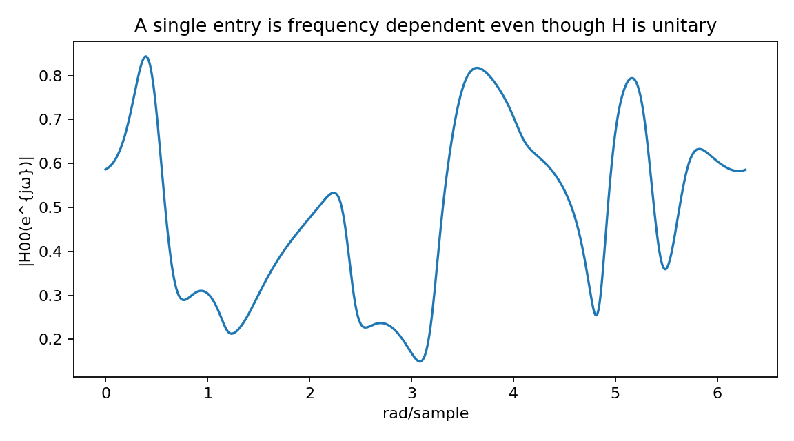
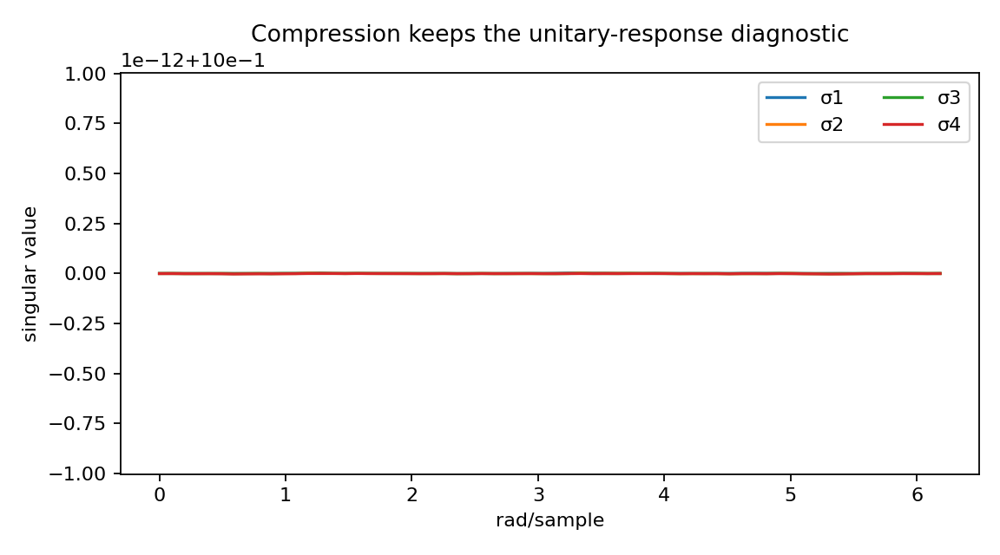
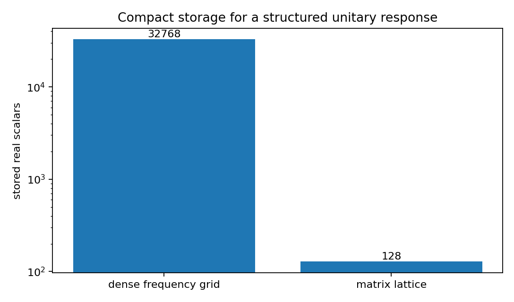
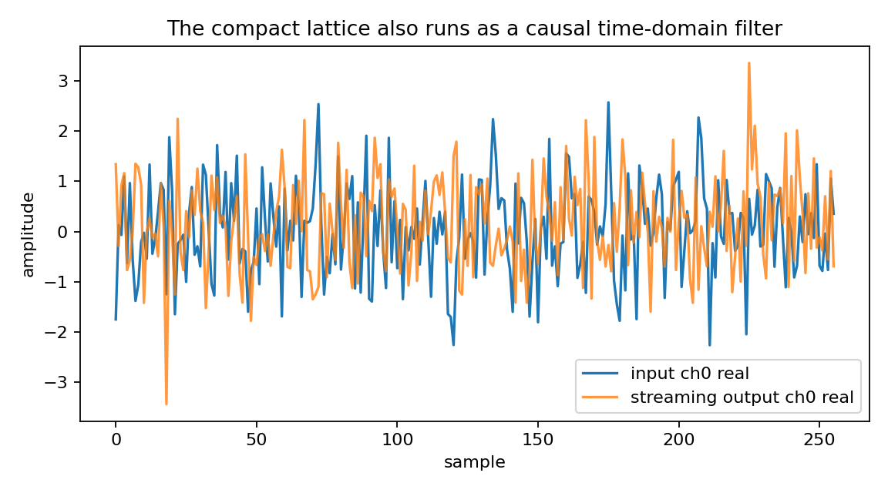

Compressing a frequency-dependent unitary response¶
Tutorial goal
Represent a dense matrix-valued frequency response with a compact matrix lattice.
Note
New to the terminology? See the lattice DSP concept map and the causality/data-use guide for how online, offline, block, and MIMO examples should be read.
Context¶
Dense frequency grids can require many numbers. A matrix lattice can represent a structured unitary response with far fewer parameters when the response is compatible with the model.
Key idea and equations¶
A dense sampled response stores one matrix per frequency bin,
which costs \(O(Lc^2)\) scalar values. A matrix-lattice model stores a small number of section matrices \(K_1,\ldots,K_m\), roughly \(O(mc^2)\) scalar values for fixed realization details.
The compression diagnostic is therefore
The approximation is useful only if the compact representation still matches the target response and remains nearly unitary:
Causality and data use¶
This example still uses a dense grid to illustrate storage compression, but it also runs the same MatrixLatticeAllPass through to_online_filter() on a vector sequence. The grid is a diagnostic; the compact lattice object has a causal streaming runtime.
What this example verifies¶
This verifies compact representation rather than online prediction. The dense frequency response is compared with a smaller matrix-lattice parameterization; a streaming trace confirms that the same compact object can also run as a causal forward filter.
How to read the result¶
Compare the storage plot with the singular-value plot: the representation is compact, the frequency response should still look unitary, and the streaming trace confirms that the compact object is also a causal time-domain filter.
Run command¶
python examples/matrix_unitary_response_compression.py
Run status¶
Return code: 0
Captured stdout¶
MIMO dimension: 4
frequency bins: 1024
matrix lattice order: 3
store all frequency-bin matrices, real scalars: 32768
matrix lattice representation, real scalars: 128
compression ratio: 256.0 x
unitarity error: 1.014e-14
streaming samples: 768
tail samples: 512
streaming energy error with tail: 4.464e-16
example response[0] first row: [-0.151-0.567j -0.059+0.143j 0.279-0.237j -0.567-0.42j ]
causal runtime: the compact response is not only stored on a grid; it can process vector samples online
Figures¶
{kind=link}

matrix_unitary_compression_entry_response.png¶
{kind=link}

matrix_unitary_compression_singular_values.png¶
{kind=link}

matrix_unitary_compression_storage.png¶
{kind=link}

matrix_unitary_compression_streaming_trace.png¶
Source code¶
1"""Compact matrix-valued unitary response representation.
2
3This demo is intentionally general: it treats a matrix lattice all-pass filter
4as a compact representation of a frequency-dependent unitary/MIMO response.
5The same primitive can appear in filter banks, array processing, multichannel
6audio, learned orthogonal convolutions, or wideband MIMO systems.
7"""
8
9from __future__ import annotations
10
11import os
12from pathlib import Path
13
14import numpy as np
15
16from lattice_dsp import MatrixLatticeAllPass, contractive_matrix_from_raw, unitary_polar_factor
17
18
19def _artifact_dir() -> Path:
20 path = Path(os.environ.get("LATTICE_DSP_ARTIFACT_DIR", "reports/example-artifacts"))
21 path.mkdir(parents=True, exist_ok=True)
22 return path
23
24
25def _save_figures(
26 *,
27 omega: np.ndarray,
28 response: np.ndarray,
29 stored_real_scalars: int,
30 lattice_real_scalars: int,
31 filt: MatrixLatticeAllPass,
32 x: np.ndarray,
33 y: np.ndarray,
34) -> None:
35 try:
36 import matplotlib.pyplot as plt
37 except ImportError: # pragma: no cover - optional plotting dependency
38 print("matplotlib is not installed; skipped figures")
39 return
40
41 out_dir = _artifact_dir()
42 singular_values = np.linalg.svd(response[::16], compute_uv=False)
43 omega_probe = omega[::16]
44
45 fig, ax = plt.subplots(figsize=(6.8, 4.0))
46 labels = ["dense frequency grid", "matrix lattice"]
47 ax.bar(labels, [stored_real_scalars, lattice_real_scalars])
48 ax.set_yscale("log")
49 ax.set_ylabel("stored real scalars")
50 ax.set_title("Compact storage for a structured unitary response")
51 for label, value in zip(labels, [stored_real_scalars, lattice_real_scalars], strict=True):
52 ax.text(label, value, f"{value}", ha="center", va="bottom")
53 fig.tight_layout()
54 path = out_dir / "matrix_unitary_compression_storage.png"
55 fig.savefig(path, dpi=160)
56 plt.close(fig)
57 print(f"wrote {path}")
58
59 fig, ax = plt.subplots(figsize=(7.2, 4.0))
60 for idx in range(singular_values.shape[1]):
61 ax.plot(omega_probe, singular_values[:, idx], label=f"σ{idx + 1}")
62 ax.set_xlabel("rad/sample")
63 ax.set_ylabel("singular value")
64 ax.set_title("Compression keeps the unitary-response diagnostic")
65 ax.legend(loc="best", ncol=2)
66 fig.tight_layout()
67 path = out_dir / "matrix_unitary_compression_singular_values.png"
68 fig.savefig(path, dpi=160)
69 plt.close(fig)
70 print(f"wrote {path}")
71
72 entry_magnitude = np.abs(response[:, 0, 0])
73 fig, ax = plt.subplots(figsize=(7.2, 4.0))
74 ax.plot(omega, entry_magnitude)
75 ax.set_xlabel("rad/sample")
76 ax.set_ylabel("|H00(e^{jω})|")
77 ax.set_title("A single entry is frequency dependent even though H is unitary")
78 fig.tight_layout()
79 path = out_dir / "matrix_unitary_compression_entry_response.png"
80 fig.savefig(path, dpi=160)
81 plt.close(fig)
82 print(f"wrote {path}")
83
84 fig, ax = plt.subplots(figsize=(7.2, 4.0))
85 span = min(256, x.shape[0])
86 ax.plot(np.real(x[:span, 0]), label="input ch0 real")
87 ax.plot(np.real(y[:span, 0]), label="streaming output ch0 real", alpha=0.8)
88 ax.set_xlabel("sample")
89 ax.set_ylabel("amplitude")
90 ax.set_title("The compact lattice also runs as a causal time-domain filter")
91 ax.legend(loc="best")
92 fig.tight_layout()
93 path = out_dir / "matrix_unitary_compression_streaming_trace.png"
94 fig.savefig(path, dpi=160)
95 plt.close(fig)
96 print(f"wrote {path}")
97
98
99rng = np.random.default_rng(7)
100dim = 4
101order = 3
102n_frequencies = 1024
103stream_samples = 768
104tail = 512
105
106reflections = [
107 contractive_matrix_from_raw(0.28 * (rng.normal(size=(dim, dim)) + 1j * rng.normal(size=(dim, dim))))
108 for _ in range(order)
109]
110residue = unitary_polar_factor(rng.normal(size=(dim, dim)) + 1j * rng.normal(size=(dim, dim)))
111unitary_response = MatrixLatticeAllPass(reflections, residue=residue)
112
113omega = 2.0 * np.pi * np.arange(n_frequencies) / n_frequencies
114h = unitary_response.frequency_response(omega)
115x = rng.normal(size=(stream_samples, dim)) + 1j * rng.normal(size=(stream_samples, dim))
116y = unitary_response.to_online_filter().process(x, drain=tail)
117streaming_energy_error = abs(float(np.vdot(y, y).real) - float(np.vdot(x, x).real)) / float(np.vdot(x, x).real)
118
119stored_real_scalars = n_frequencies * dim * dim * 2
120lattice_real_scalars = unitary_response.parameter_count(real_scalars=True, include_residue=True)
121print("MIMO dimension:", dim)
122print("frequency bins:", n_frequencies)
123print("matrix lattice order:", order)
124print("store all frequency-bin matrices, real scalars:", stored_real_scalars)
125print("matrix lattice representation, real scalars:", lattice_real_scalars)
126print("compression ratio:", round(stored_real_scalars / lattice_real_scalars, 1), "x")
127print("unitarity error:", f"{unitary_response.unitarity_error(omega[::32]):.3e}")
128print("streaming samples:", stream_samples)
129print("tail samples:", tail)
130print("streaming energy error with tail:", f"{streaming_energy_error:.3e}")
131print("example response[0] first row:", np.round(h[0, 0], 3))
132print("causal runtime: the compact response is not only stored on a grid; it can process vector samples online")
133
134_save_figures(
135 omega=omega,
136 response=h,
137 stored_real_scalars=stored_real_scalars,
138 lattice_real_scalars=lattice_real_scalars,
139 filt=unitary_response,
140 x=x,
141 y=y,
142)